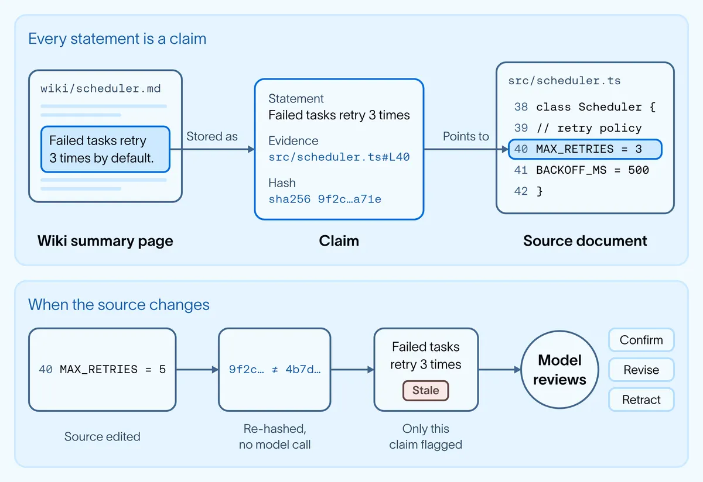
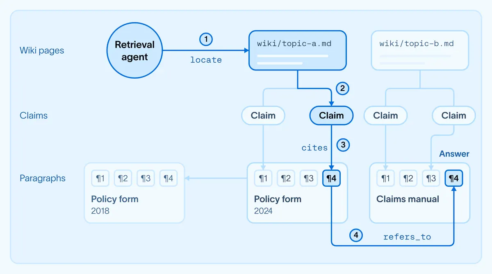

graph 當記憶：claim 帶 hash，citation 變成可走的邊
導讀原文：LangChain Blog〈Building evidence-grounded agent memory with OpenWiki and Graphs〉——OpenWiki 記憶層加上證據圖的自家 benchmark 實驗報告
OpenWiki 是 LangChain 的開源 wiki 編譯器，這篇把它的產出當 agent 的記憶層，再加一層證據圖把記憶變成可循的路徑。
企業 agent 要橫跨政策、手冊、工單與程式碼。找到相關段落只是開始，還要判斷哪條規則適用、什麼變了、一個來源如何影響另一個。
語意或混合搜尋取回的是孤立 chunk，彼此怎麼關聯留給 agent 自己拼。原文說他們試過 agentic RAG 與 graph-based metadata filtering，只解一半。
持久記憶層保存的是知識與關係，讓 agent 跨任務重用；沒有它，每題都得重建一次理解。銀行與保險最難，因為保單與規範常互相修訂、取代。

每個 OpenWiki 陳述都落成一條 claim：斷言、支撐它的來源行號、那些行的 hash。來源一改，hash 就對不上。
判定過期不呼叫模型：比 hash 是確定性動作，只有被標記的 claim 才送模型確認、修訂或撤回。
編譯 111 份文件成約原大小十分之一的 wiki 花 $4.15，之後每補一份約 $0.09；原文所有檢索與作答成本都不含這筆。
citation 變成 edge，檢索才有路可走
只有 wiki 時還剩半個問題：答得準了，但每次走的證據不一樣。

cites 到段落、沿 refers_to 到另一份文件，四步都是既有邊，答案是沿路收集的結果。（點圖看原尺寸）圖／LangChain Blog，原文邊的型別不多，語意來自原本就有的引用：claim cites 段落、新文件 supersedes 舊的、頁面 refers_to 另一份；工具定義另有 amends、attaches_to 與反向邊。
所以建圖不到一秒、不呼叫模型，並解析了測試庫裡每一個顯式交叉引用。導航靠 locate 定位、expand 沿邊展開，遇分支才讓 agent 選。
代價同源：由 wiki 衍生的邊，準不準取決於模型寫的 citation。原文也劃界線——圖只做證據導航，不做整個組織的知識建模。
原語的分工（原文另有點出 topics，本表未列）：
| 原語 | 它是什麼 | 解決什麼 |
|---|---|---|
| 段落 ¶ | 確定性流程切出的一段文字，各給唯一識別碼 | claim 能指到精確那一段，不是整份文件 |
| claim | 斷言＋來源行號＋該行 hash | 來源一改就定位到受影響的那幾句 |
| wiki 頁 | 綜合過的解釋頁，每句都回連來源 | 跨來源脈絡可重用，不必每題重建 |
| typed edge | cites／supersedes／refers_to 等具型別的邊 | 引用變成可循路徑，建圖不需模型呼叫 |
→ 可橫向滑動
本站整理（原文未給此對照表）；段落→claim→頁面的層序見上圖，邊的型別出自原文的工具定義。
實測：答得更準，引用卻更不穩
設定：同一個檢索 agent、同一個底層模型、同一批題目，唯一變動是能不能讀編譯後的 wiki。共 80 題簡單查找＋50 題跨文件連結題，每題問三次。
準確率由 grader 對照 972 條事實帳本評分；一致性是三次作答引用集合的 Jaccard 重疊，只測是否引用同一批來源，不測對錯。
簡單查找是對照組，結果持平：0.84 對 0.83、$0.020 對 $0.021，延遲卻從 9 秒變 12 秒——單段落問題沒有回報。
連結題 0.10→0.52（約 5 倍），成本約 $0.55→$0.19；但引用重疊掉到 0.25。答得準不等於每次走同一條路，來源衝突時換證據就可能換答案。
加上證據圖：0.66（+27%）、一致性 0.50（翻倍）、中位作答 30→18 秒、每題答對 $0.080。原文限定：這是更有指向性的檢索，沒有讓 agent 變成確定性。
各條件實測值，每格依序為準確率／一致性／每題答對成本／中位作答：
| 條件 | 簡單查找（80 題） | 連結題（50 題） |
|---|---|---|
| Search 對原始文件關鍵字搜尋 | 0.84／0.72／$0.020／9 秒 | 0.10／0.44／約 $0.55／31 秒 |
| Wiki 同一個 agent 可讀編譯後的 wiki | 0.83／0.74／$0.021／12 秒 | 0.52／0.25／約 $0.19／30 秒 |
| Wiki＋證據圖 | 原文未測 | 0.66／0.50／$0.080／18 秒 |
→ 可橫向滑動
數字出自原文正文與結果圖（LangChain 自報）；粗體 0.25 是低於純搜尋 0.44 的那一格。成本與延遲只算檢索與作答，不含編譯與更新。
值得付錢的條件是重複的跨來源推理：多個 agent 反覆問同一批離散來源，$4.15 與每份約 $0.09 才攤得平。簡單查找用純搜尋一樣準，還快 3 秒。
下一步原文想只編譯跨來源問題真正需要的脈絡，而不是整個 repo，並把 claim 與 typed edge 當語意、情節、程序記憶的基礎。
讀數前提。語料是 111 份合成保險文件，刻意混入過期版本、矛盾與間接引用鏈，散文由 LLM 生成、再以自動檢查確認事實齊備。對照組是純關鍵字搜尋，未與向量或混合 RAG 相比，5 倍不可外推到語意檢索；原文未說明 grader 的模型與計分權重。
帶走三件事
記憶的價值在關係，不在段落。連結題 0.10→0.52，差距來自跨來源。
可稽核要的是同一條路。準確率不等於可重現，圖補的正是這一塊。
付不付錢看重用次數。編譯費不計入答案成本；簡單查找還慢 3 秒。
同一主題的其他館藏
導讀為本站編輯內容（AI 摘解自原文與館藏重點，非官方文件）；引述數據出自原文（LangChain 自家 benchmark），圖解與小標為編輯整理。內容經對照原文的獨立事實審查後發布。